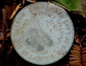

Whether you are a private land owner wanting a boundary line clarified, a government agency needing title research or mapping services, or a contractor requiring as-built surveys and plan review you want someone who will take the time to understand the real issues and provide practical and innovative solutions.
For more than 25 years, Linda A. Carruthers & Associates, Professional Land Surveyors has been a trusted advisor for its clients, providing a broad range of surveying services in California and Nevada, with a special focus on resolving difficult boundary issues and title problems in Marin County, California.
Owner Linda Carruthers has built her professional reputation on bringing a personal touch in partnering with her clients to fully understand all sides of complex issues and on providing them practical solutions. As a trained mediator, with expertise in boundary dispute resolution, non-traditional mediation, and third opinion, she is known for saving her clients time and money.